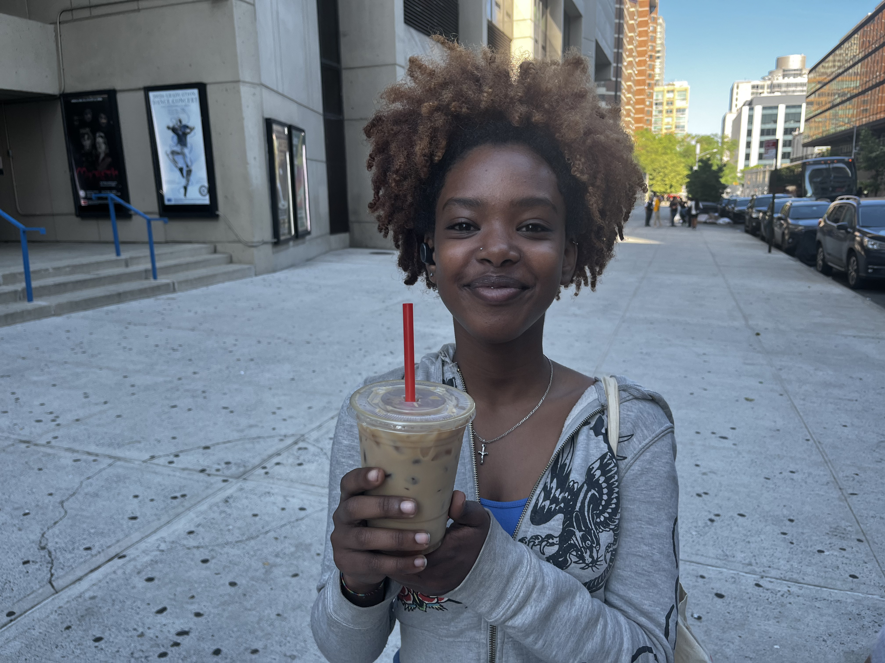
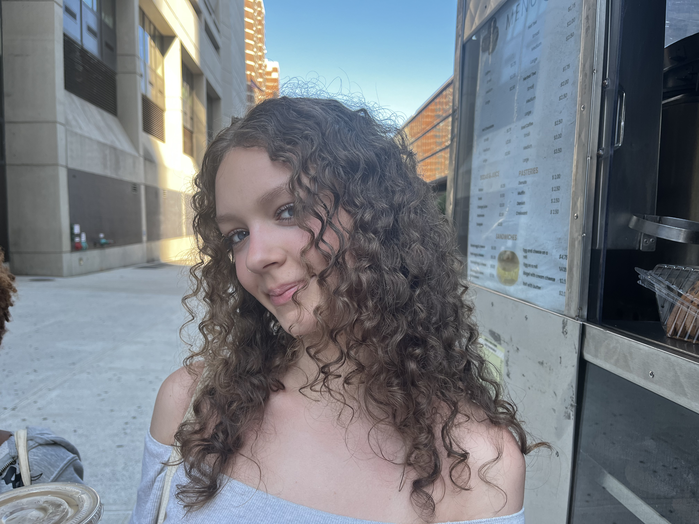

I love Mo’s cart. I don’t think a single day has gone by without buying an ice coffee from Mo. On top of that, his muffins are a solid choice for any breakfast. Mo has a welcoming personality that is just what you need in the morning. 5/5 Stars I would definitely recommend. ⭐⭐⭐⭐⭐
Mo’s food cart has been a big part of my High School experience. It is one of the most popular spots near school and always has a line of students. Mo is friendly and recognizes many of his regular customers. I enjoy stopping by between classes to grab a drink and take a break. Over the years, Mo’s has become a place that many students associate with comfort and routine. Everyone I know goes to Mo’s. Since my freshman year I’ve been buying this coffee. It's very comforting and makes me feel at home.
